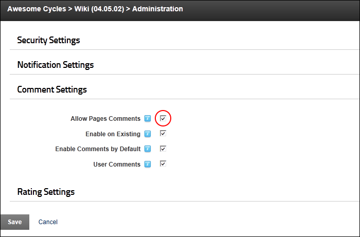

Enabling Comments on All Wiki Pages
How to enable comments to be added to all pages of the Wiki module. Note: When adding or edit a Wiki page, the editor will still have the option of disabling comments for that page.
- Select
 Wiki Configuration from the Wiki module actions menu.
Wiki Configuration from the Wiki module actions menu.
- Expand the Comment Settings section.
- At Allow Page Comments, to allow comments to be added to Wiki pages. This will enable and check the "Enable on Existing" field below.
- At Enable on Existing, to enable comments to be added to both new and existing Wiki pages.

- At Enable Comments by Default, to pre-select the "Enable Page Comments" field when adding a new page.
- Optional. At User Comments, to send a notification message when a comment is added. Notifications will be sent to one or more roles as set in the Notification Settings section. See "Configuring Notification Settings"
- Click the Save button.